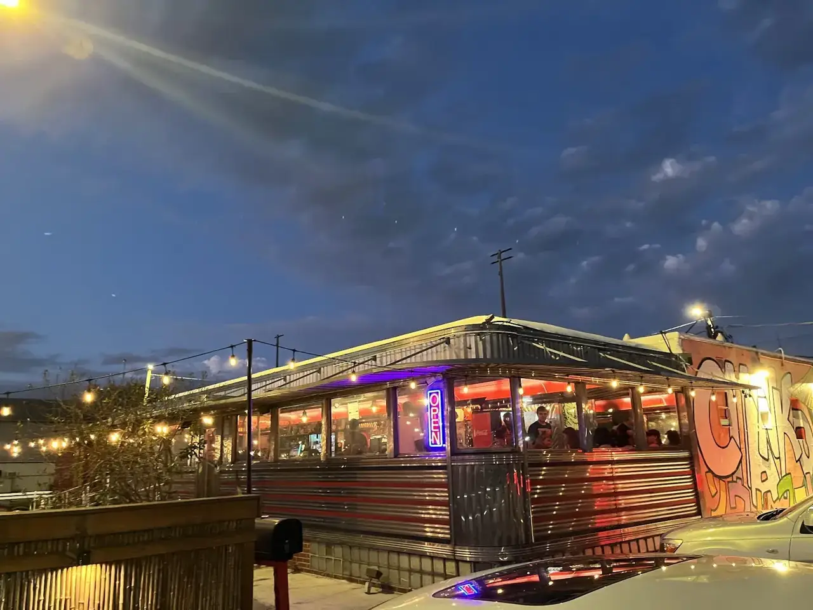
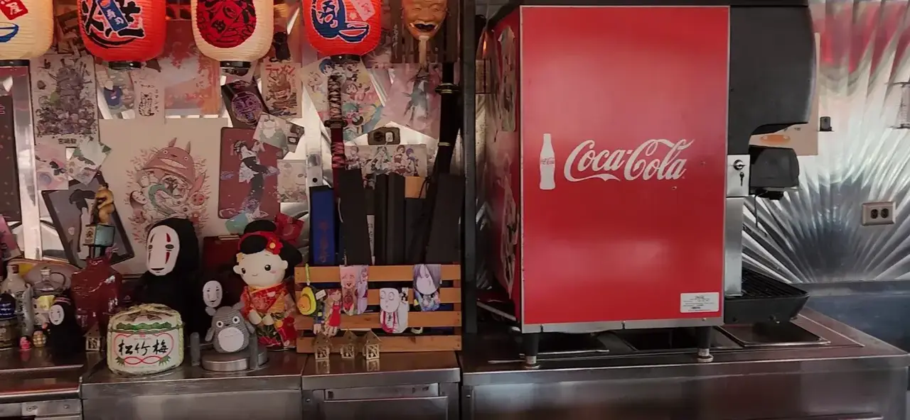
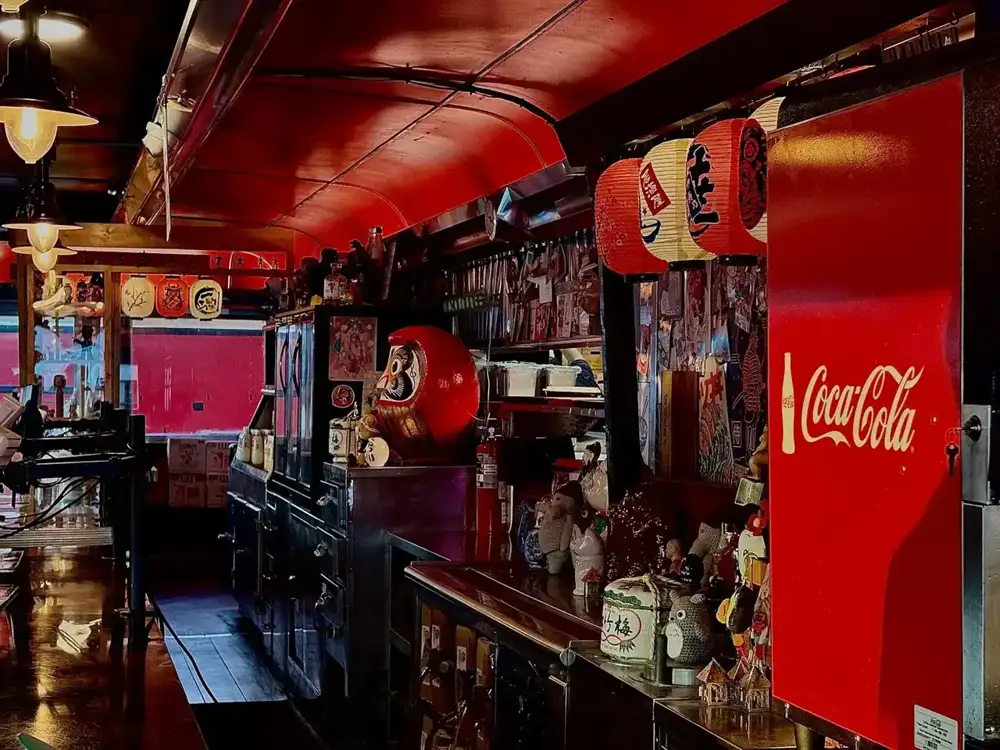
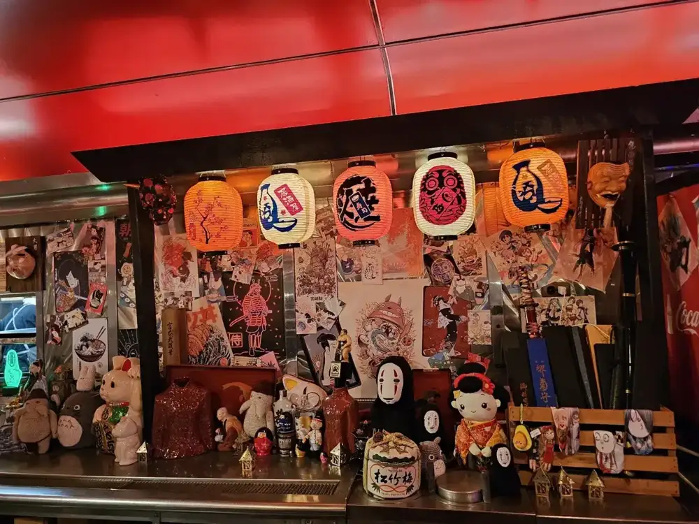
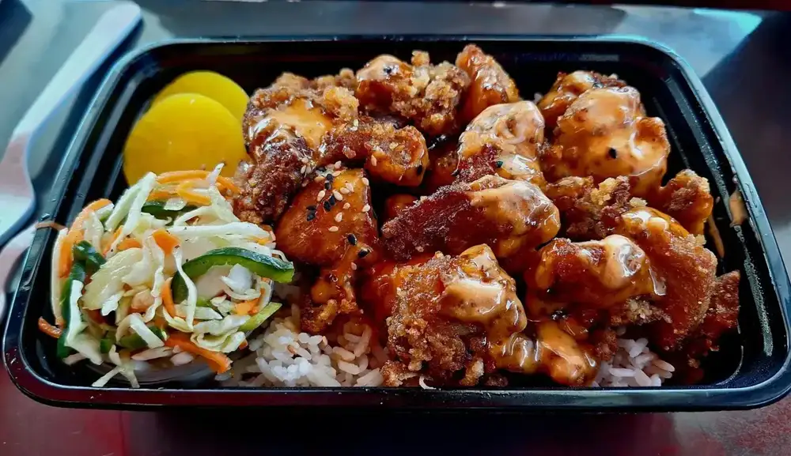

Hiroshima okonomiyaki
A savory pancake on the teppan with a layer of yakisoba noodles, cabbage, leeks and house okonomi sauce. One guest's first ever, and she called it amazing.
Homestyle Japanese · Tampa, FL
Savory pancakes layered with yakisoba noodles, plus curry, katsu and portions that turn into tomorrow's lunch.

What we're known for
Three things guests keep ordering.
A savory pancake on the teppan with a layer of yakisoba noodles, cabbage, leeks and house okonomi sauce. One guest's first ever, and she called it amazing.

The dish one reviewer kept stealing off her husband's plate, served over rice in a takeout box.

Japanese curry and rice plates, with some of the best curry in town according to one guest. Every dish is basically two meals.






4.7 ★ · 1587 Google reviews
GUEST CHECK№ 1This is a self-serve restaurant with seats but there is no table service. I loved the vibes, definitely feels like your transported to a diner in a Tokyo neighborhood. I have never had OKONOMIYAKI before but wow it was amazing. Definitely a unique flavor and paired with the mayo and pasta it was delightful. Their portions are massive so I had enough food for dinner and lunch the next day.
GUEST CHECK№ 2Chanko is so cool. It’s like an oldschool diner and I am here for it. You walk in order everything from a kiosk, and then they call your name when your food is ready. Now I’m old school and I HATE ordering at kiosks.
GUEST CHECK№ 3Don’t let the kind of rough neighborhood scare you away. It’s a very delicious Japanese restaurant with some of the best curry in town. You quickly figure out why everything comes in a takeout container as the portions are massive. Every dish is basically two meals! Definitely hits good when you’re hungry. This will be one of my favorite spots quickly. Highly recommend!

Since the first pot of coffee
Chanko sits at 4603 N Florida Ave in Tampa, in a chrome-and-red diner packed with lanterns, anime posters, plush toys and daruma dolls. Their own site says the Daruma stands for prosperity, good luck and perseverance, and the character they chose is Win.
You order at the kiosks, which show a picture of everything, and they call your name when it is ready. There is seating but no table service. Guests call it an old-school diner in a Tokyo neighborhood, and say the portions are so big every dish is basically two meals.
Slide on in
4603 N Florida Ave, Tampa, FL 33603
Order at the kiosks by the door, then grab a seat. Seating is self-serve, with no table service. Pickup is also on their site.